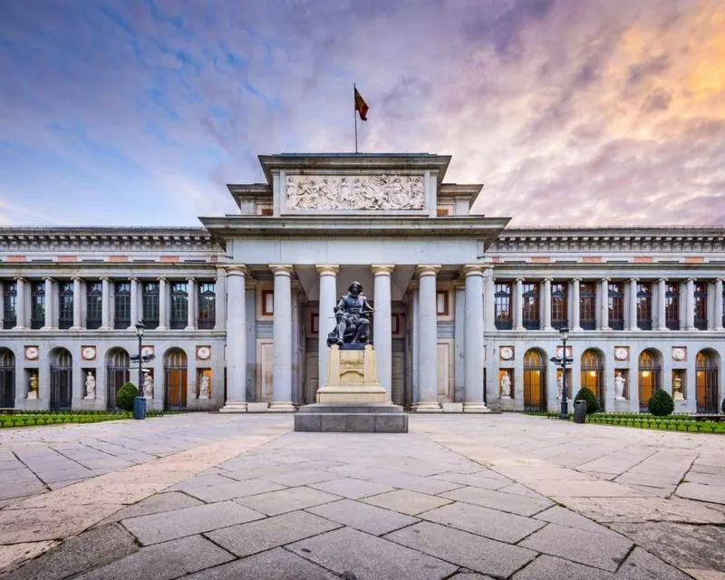
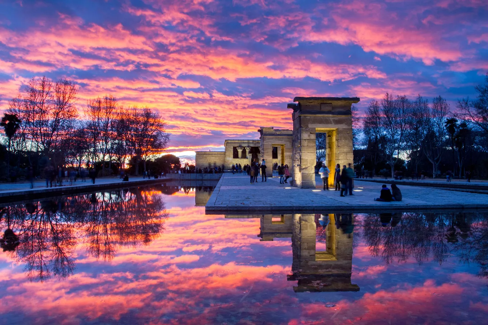

Museo del Prado
El Museo del Prado, en Madrid, es uno de los museos de arte más importantes del mundo, inaugurado en 1819. Destaca por su colección de pintura europea con obras maestras de Velázquez, Goya, El Greco y Rubens, como "Las Meninas," "El jardín de las delicias," "La maja desnuda" y "Las tres gracias," representando la evolución del arte del siglo XII al XIX.
Templo de Debod
El Templo de Debod es un antiguo templo egipcio que se encuentra en Madrid, España, regalado por Egipto en agradecimiento por la ayuda española en la preservación de templos históricos. Construido alrededor del siglo II a.C. en honor a los dioses Amón e Isis, fue desmantelado y trasladado a Madrid en la década de 1960. Destaca por su arquitectura egipcia y su ubicación privilegiada ofreciendo vistas panorámicas, representando así la historia antigua fuera de su contexto original.
Puerta del Sol

La Puerta del Sol, en Madrid, es un ícono histórico y político de España. Su importancia radica en eventos clave, como la proclamación de la Primera República en 1873 y el anuncio de la Segunda República en 1931. Su famoso reloj, marcador del cambio de año, es reconocido a nivel mundial. Además, aloja la estatua del Oso y el Madroño, símbolo de la ciudad. Hoy, sigue siendo un epicentro urbano, con la estatua del kilómetro cero que marca el punto central de las carreteras radiales españolas. Su papel como punto de encuentro, protestas y celebraciones culturales perdura, convirtiéndola en el corazón histórico y social de Madrid.
¡Las fuentes utilizadas en este sitio web provienen de fuentes externas!